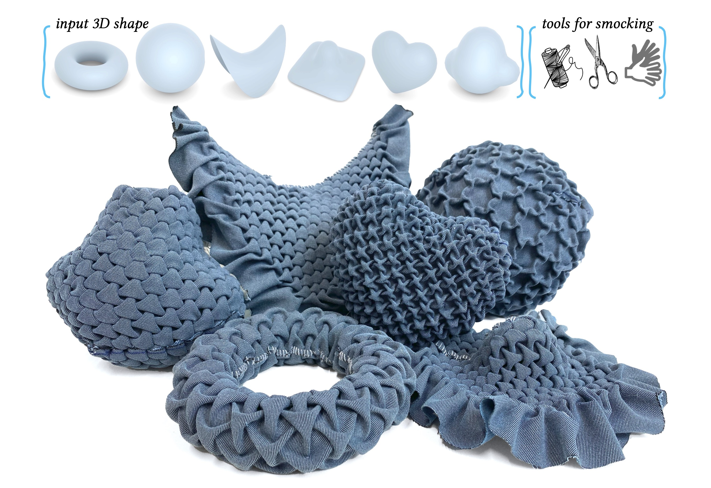

Abstract
We present a novel method for realizing freeform surfaces with pieces of flat fabric, where curvature is created by stitching together points on the fabric using a technique known as smocking. Smocking is renowned for producing intricate geometric textures with voluminous pleats. However, it has been mostly used to realize flat shapes or manually designed, limited classes of curved surfaces. Our method combines the computation of directional fields with continuous optimization of a Tangram graph in the plane, which together allow us to realize surfaces of arbitrary topology and curvature with smocking patterns of diverse symmetries. Given a target surface and the desired smocking pattern, our method outputs a corresponding 2D smocking pattern that can be fabricated by sewing specified points together. The resulting textile fabrication approximates the target shape and exhibits visually pleasing pleats. We validate our method through physical fabrication of various smocked examples.
Download
Citation
@article{aviv2024fabric,
title = {Fabric Tessellation: Realizing Freeform Surfaces by Smocking},
author = {Aviv Segall and Jing Ren and Amir Vaxman and Olga Sorkine-Hornung},
journal = {ACM Transaction on Graphics (SIGGRAPH 2024 issue)},
year = {2024},
volume = {43},
number = {4},
publisher = {Association for Computing Machinery},
address = {New York, NY, USA},
}